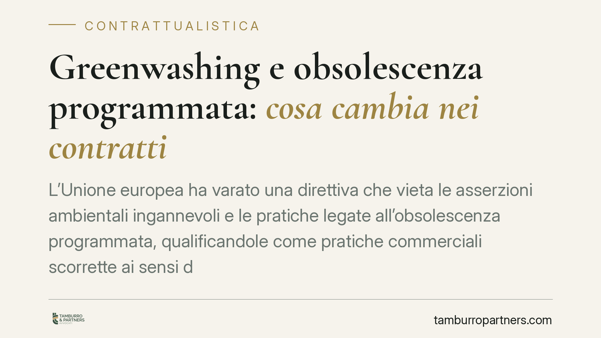

Greenwashing e obsolescenza programmata: cosa cambia nei contratti
L'Unione europea ha varato una direttiva che vieta le asserzioni ambientali ingannevoli e le pratiche legate all'obsolescenza programmata, qualificandole come pratiche commerciali scorrette ai sensi del Codice del consumo. Per le imprese cambiano le regole su comunicazione green, aggiornamenti software e riparabilità dei prodotti. Il recepimento italiano è in corso: conviene adeguare contratti e messaggi commerciali prima dell'entrata in vigore.

Il quadro normativo
La Direttiva UE 2024/825 modifica due testi europei di riferimento in materia di consumatori, intervenendo in modo diretto su ciò che le imprese possono affermare quando promuovono i propri prodotti come sostenibili. Il recepimento italiano è in corso: in attesa del decreto definitivo, l'impianto interverrà sul Codice del consumo (d.lgs. 206/2005).
Il meccanismo è lineare. Le nuove condotte vietate entrano nel catalogo delle pratiche commerciali scorrette, disciplinate dagli artt. 20 e seguenti del Codice del consumo. Questo è il punto decisivo: una volta che una condotta è qualificata come pratica scorretta, non è necessario dimostrare che un singolo consumatore abbia subito un danno concreto. È la condotta in sé a essere sanzionabile, perché idonea a falsare le scelte del consumatore medio.
Cosa viene vietato
Due filoni principali.
Il primo riguarda il greenwashing: le asserzioni ambientali generiche e non verificabili ("eco", "green", "a impatto zero") prive di basi documentali solide, le etichette di sostenibilità non fondate su sistemi di certificazione riconosciuti, e i claim sulla compensazione delle emissioni usati in modo fuorviante.
Il secondo riguarda l'obsolescenza programmata. Tra le pratiche colpite rientrano: gli aggiornamenti software che riducono le funzionalità di un bene senza che il consumatore ne sia informato; le affermazioni ingannevoli sulla durata o riparabilità di un prodotto; e le condotte dirette a ostacolare o indurre il consumatore a non utilizzare ricambi o materiali di consumo non originali, quando il prodotto sarebbe tecnicamente compatibile. Attenzione alla sfumatura: non è vietato usare ricambi originali, è vietato impedire o scoraggiare in modo scorretto l'uso di alternative compatibili.
Gli esempi più discussi riguardano i beni tecnologici — stampanti, smartphone e simili — dove le logiche di blocco dei consumabili e gli aggiornamenti peggiorativi sono più frequenti. Ma la portata della disciplina è generale e investe qualsiasi settore.
Perché riguarda i contratti, non solo il marketing
Molte imprese leggeranno questa novità come una questione di comunicazione. È un errore di prospettiva. Le nuove regole incidono direttamente sui rapporti di fornitura.
Un produttore che riceve componenti, semilavorati o claim ambientali dai propri fornitori è esposto se ribalta quelle affermazioni sul mercato finale. Se il fornitore dichiara caratteristiche "sostenibili" non documentate, è il produttore a rispondere verso il consumatore e l'Autorità. Da qui l'esigenza di rivedere i contratti a monte della filiera.
Servono clausole che impongano ai fornitori di documentare ogni asserzione ambientale, obblighi di aggiornamento in caso di modifica della normativa, e meccanismi di manleva che allochino correttamente il rischio sanzionatorio tra le parti. La manleva non elimina la responsabilità verso l'esterno, ma consente di recuperare internamente il costo di una sanzione imputabile al fornitore.
Il profilo sanzionatorio
Le pratiche commerciali scorrette sono presidiate dalle sanzioni previste dall'art. 27 del Codice del consumo e affidate all'Autorità Garante della Concorrenza e del Mercato (AGCM), che può intervenire anche d'ufficio, inibire la pratica e irrogare sanzioni pecuniarie. A ciò si aggiunge il rischio reputazionale, spesso più oneroso della sanzione stessa.
Cosa fare in concreto
- Mappate i claim ambientali già in uso su siti, packaging e materiali commerciali, e verificate per ciascuno la documentazione a supporto. In assenza di basi verificabili, il messaggio va rimosso o riformulato.
- Richiedete ai fornitori evidenze documentali di ogni affermazione ambientale e di ogni caratteristica di riparabilità o durata riportata nelle schede tecniche.
- Rivedete i contratti di fornitura, inserendo obblighi di garanzia sulle asserzioni ambientali e clausole di manleva proporzionate al rischio sanzionatorio.
- Verificate le policy su aggiornamenti software e consumabili: ogni modifica che riduce funzionalità deve essere trasparente e preventivamente comunicata.
- Formate le funzioni marketing e vendite sui nuovi confini del lecito, per evitare che un messaggio promozionale generi un illecito sanzionabile.
Consigliamo di avviare l'adeguamento prima dell'entrata in vigore del decreto di recepimento: la revisione contrattuale lungo la filiera richiede tempi non brevi.
---
Contributo informativo a cura di Tamburro & Partners Avvocati. Non costituisce parere legale.
Ogni contratto ha il suo equilibrio.
Se vuoi una revisione delle clausole o una redazione su misura, scrivi allo studio. Ti rispondiamo entro un giorno lavorativo.